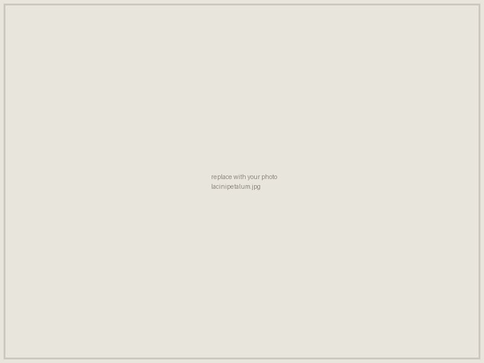
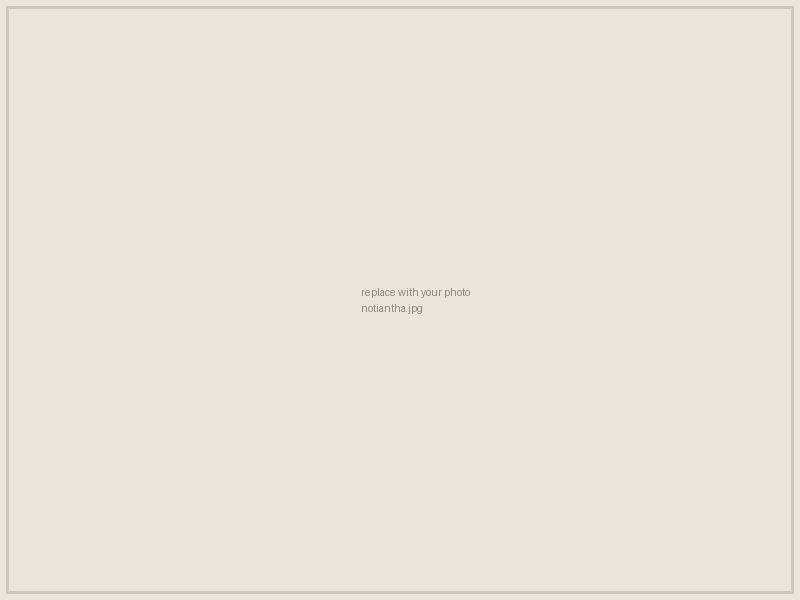
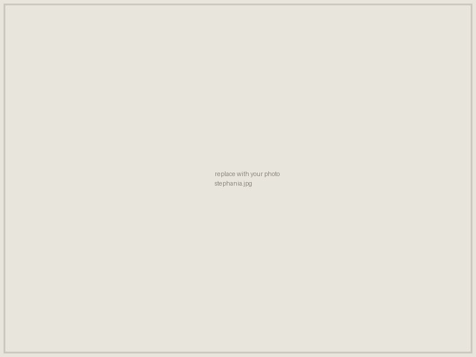
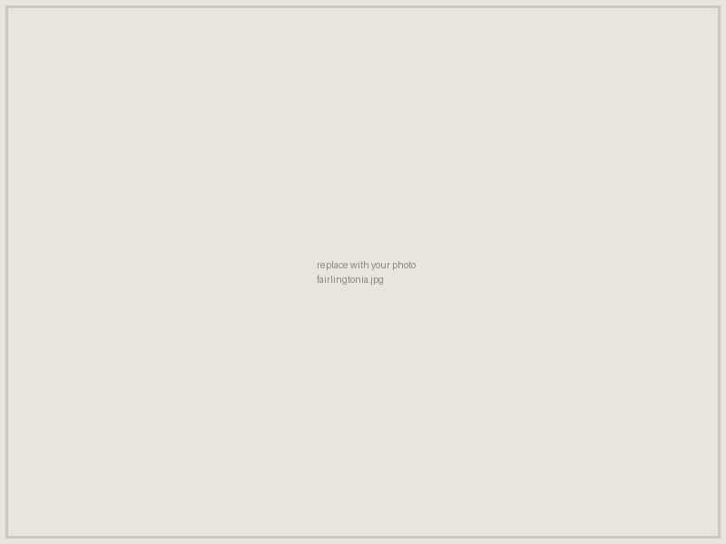
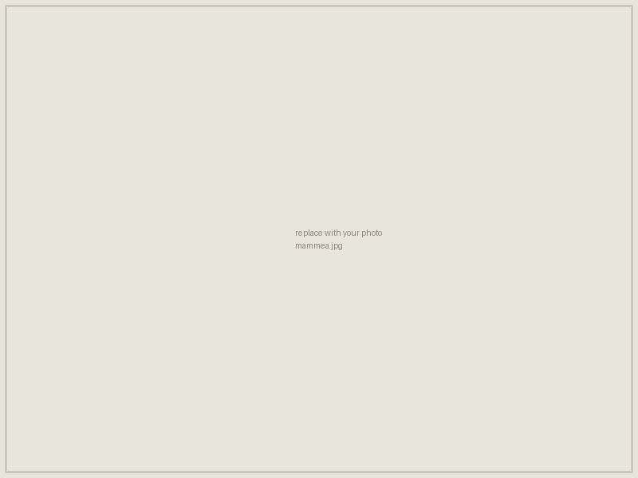

Specimens from our research and from the teaching collection at William Jewell.
Research specimens

Lacinipetalum spectabilum

Notiantha grandensis Jud et al. 2017

Stephania psittaca (Menispermaceae) fruit from the early Paleocene of PatagoniaRourea blatta Jud and Nelson 2017

Fairlingtonia thyrsopteroides roots, showing the adventitious roots and slender young stem (Jud 2015)Transverse section of Todea tidwellii showing the dark sclerenchymatous pith (Jud et al. 2008)

Mammea paramericana Nelson and Jud 2017Transverse section of a Parinari endocarp from the lower Miocene of Panama. Scale bar = 1 cm (Jud et al. 2016)Fossil Ficus wood from the Cenozoic of Panama (Jud and Dunham)
WJC rocks & fossils
Specimens from the William Jewell College teaching collection.